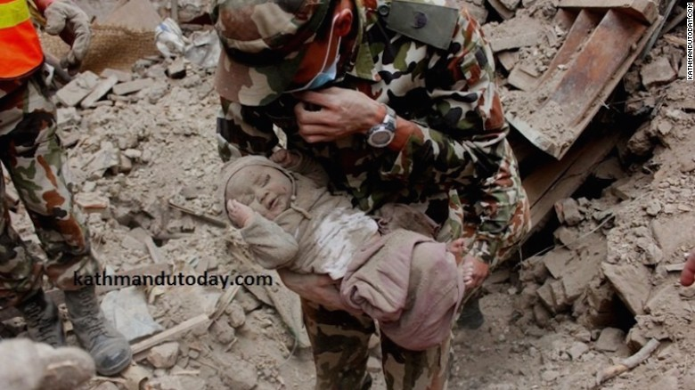

Baby pulled from Nepal earthquake rubble after 22 hours
 Sonies is rescued covered in dust but with barely a scratch.Earthquake Devastation in Nepal
People looked for effects in their house destroyed Wednesday in Bhaktapur, Nepal. A major earthquake of 7.8 hit Kathmandu Saturday lunchtime, and was followed by several aftershocks that avalanche on Mount Everest mountaineers who buried their base camps triggered.